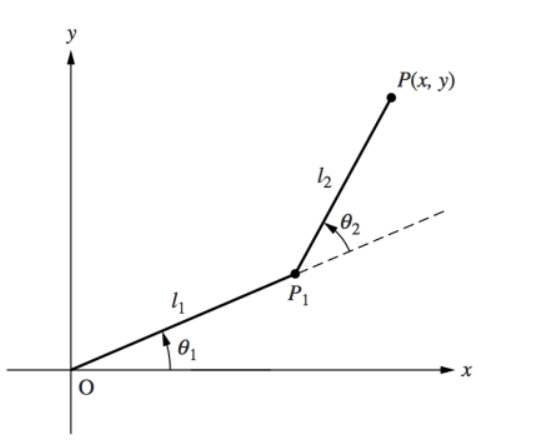
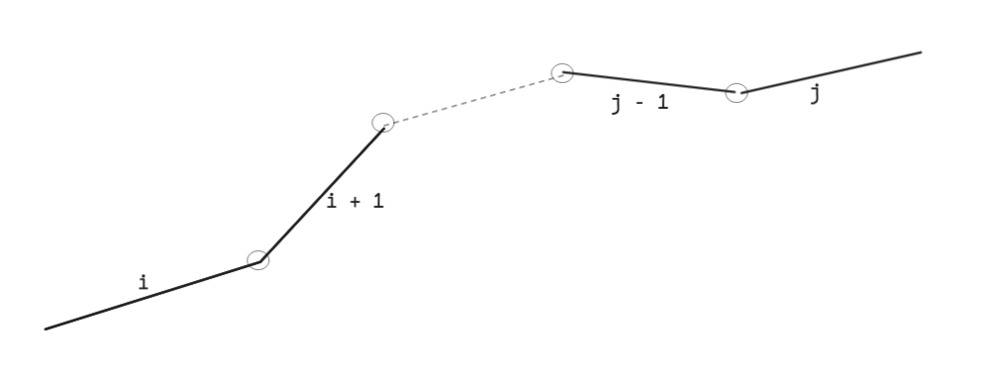
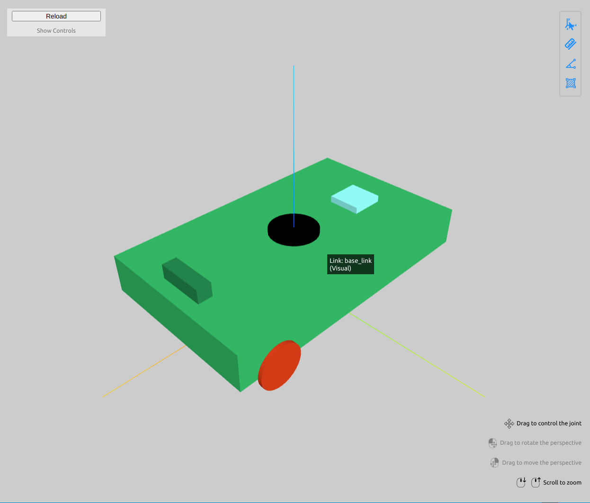

Forward kinematics for Robot Manipulators
Goals
- What is kinematics / forward kinematics ?
- How to derive forward kinematics from URDF of any arbitrary robot ?
- What are DH-parameters and why do we use them ?
- How to practically do forward kinematics for arbitrary robot kinematic chains
- What libraries exist out there ?
What is kinematics / forward kinematics ?
Kinematics maps actuator space \(\to\) task space; in other words, given actuator inputs, we can determine how the robot responds in its task space.It is important to note that kinematics encompasses not only position, but also velocity, acceleration, jerk, and higher-order derivatives. Essentially, any mapping from actuator variables to these quantities in task space falls under kinematics. Lets take a look at few robots, and explore how this looks:
- Robotic manipulator
- Actuators: Joint motors (position / velocity / acceleration)
- Task space: End-effector state (position / velocity / acceleration)
- Differential drive robot
- Actuators: Wheel motors (velocity)
- Task space: Robot body frame (linear and angular velocity)
- Quadrotor
- Actuators: Propeller motors (thrust)
- Task space: Robot body frame (linear and angular acceleration)
Let’s take 2 link manipulator as a concrete example. Given, joint angles: \(\theta_1\), \(\theta_2\), where’s the end effector (\(x\), \(y\)) ?

Joint position \(\to\) End effector position \[\begin{align*} x = l_1 \cdot cos(\theta_1) + l_2 \cdot cos(\theta_1 + \theta_2) \\ y = l_1 \cdot sin(\theta_1) + l_2 \cdot sin(\theta_1 + \theta_2) \end{align*}\]
Joint velocities \(\to\) End effector velocity \[\begin{align*} x = -l_1 \cdot sin(\theta_1) \cdot \dot\theta_1 - l_2 \cdot sin(\theta_1 + \theta_2) \cdot (\dot\theta_1 + \dot\theta_2) \\ y = l_1 \cdot cos(\theta_1) \cdot \dot\theta_1 + l_2 \cdot cos(\theta_1 + \theta_2) \cdot (\dot\theta_1 + \dot\theta_2) \end{align*}\]
aaand, we will skip the accelerations here, since you can probably tell its going to get out of hand pretty quickly.
Regardless, with the above equations in place, one can pretty deterministically calculate the end effector state from the joint angles. This sort of analysis works well with low dof systems, but for more complicated systems, these are not so fun to derive. This is where we turn to transformation matrices, and encode everything in terms of matrix multiplications. This generalizes better.
Before we get further, first lets settle on some conventions that we are going to be using for the remainder of this text.
Transformation conventions for serial manipulators
- We have \(n\) joints, numbered \(1 \to n\)
- We have \(n+1\) links, numbered \(0 \to n\), where link 0 is the base link (or the inertial link)
- \(i\) th joint connects link \(i-1\) and \(i\) \(=>\) link_\(i-1 \to\) joint_\(i \to\) link_\(i\)
- joint_\(i\) controls the motion of immediate link_\(i\)
- With the \(i\)th joint we associate a joint variable \(q_i\), which resolves to \(\theta_i\) for revolute and \(d_i\) for prismatic joints respectively
- For defining transformating matrices or relative measurments, we will be using this convention:
- \(T_j^i\) \(\to\) Transformation of \(j\) (subscript) when expressed in frame \(i\)
Given this kinematics chain, if we need to write the transformation matrix \((T_j^i)\) from \(i \to j\)

\[\begin{align*} T_j^i = A_{i+1} \cdot A_{i+2} ... A_{j-1} \cdot A{j} = \begin{bmatrix} R_j^i & p_j^i \\ 0 & 1 \end{bmatrix} \end{align*}\]
where, \(A_k\) is just the homogenous transformation matrix between links \(k-1\) and \(k\)
and \(A_k = A_k(q_k)\) is a function of \(k\)th joint variable.
Okay that’s well and good, but how do we obtain these individual \(A_k\) ? There are few options here:
- If the manufacturer provides the DH (Denavit–Hartenberg) parameters, we can directly plug them in to compute the \(A_k\) matrices, which depend only on the joint variables. DH parameters systematically encode the robot’s link geometry.
- If you are building a robot from scratch, or if DH parameters are not provided, you would need to carefully inspect the robot geometry to determine them.
- The third option, which I prefer, is to use the URDF (Unified Robot Description Format). It already encodes the complete robot geometry and is the current standard for computing forward kinematics.
FK using DH parameters (Theoretical)
DH (a.k.a Denavit–Hartenberg) parameters is a collection of four parameters:
\[ \begin{array}{|c|c|c|p{6cm}|} \hline \text{Parameter} & \text{Type} & \text{Motion} & \text{Meaning} \\ \hline \theta_i & \text{Joint parameter} & \text{Rotation} & \text{Angle we should rotate } Z_{i-1} \text{ by so that } X_{i-1} \parallel X_i \\ d_i & \text{Joint parameter} & \text{Translation} & \text{Distance along } Z_{i-1} \text{ that would make origin of } i-1 \text{ intersect with } X_i \\ a_i & \text{Link parameter} & \text{Translation} & \text{Distance along } X_i \text{ from } Z_{i-1} \text{ to } Z_i \\ \alpha_i & \text{Link parameter} & \text{Rotation} & \text{Angle to rotate around } X_i \text{ to align } Z_{i-1} \text{ with } Z_i \\ \hline \end{array} \]
Once we have these four parameters, the rotation matrix \(A_i\) (or \(A_k\) doesn’t matter) can be computed as follows:
\[ A_i = Rot_{z,\theta} \cdot Trans_{z, d} \cdot Trans_{x, a} \cdot Rot_{x, \alpha} \]
OR
\[\begin{align*} A_i = \begin{bmatrix} \cos\theta_i & -\sin\theta_i & 0 & 0 \\ \sin\theta_i & \cos\theta_i & 0 & 0 \\ 0 & 0 & 1 & 0 \\ 0 & 0 & 0 & 1 \end{bmatrix} \cdot \begin{bmatrix} 1 & 0 & 0 & 0 \\ 0 & 1 & 0 & 0 \\ 0 & 0 & 1 & d_i \\ 0 & 0 & 0 & 1 \end{bmatrix} \cdot \begin{bmatrix} 1 & 0 & 0 & a_i \\ 0 & 1 & 0 & 0 \\ 0 & 0 & 1 & 0 \\ 0 & 0 & 0 & 1 \end{bmatrix} \cdot \begin{bmatrix} 1 & 0 & 0 & 0 \\ 0 & \cos\alpha_i & -\sin\alpha_i & 0 \\ 0 & \sin\alpha_i & \cos\alpha_i & 0 \\ 0 & 0 & 0 & 1 \end{bmatrix} \end{align*}\]
To delve deeper this video / series is a great refresher: Robotics 1 U1 (Kinematics) S5 (HTM) P2 (HTM by Denavit Hartenberg)
FK from URDF (Practical)
URDF stands for Universal Robot Description Format, developed by ROS (Robot operating system). Fundamentally its a XML file, with some special tags.
<?xml version="1.0"?>
<robot name="two_link_manipulator">
<!-- Base link -->
<link name="base_link">
<visual>
<geometry>
<box size="0.2 0.2 0.05"/>
</geometry>
<origin xyz="0 0 0" rpy="0 0 0"/>
<material name="gray"/>
</visual>
</link>
<!-- First link -->
<link name="link1">
<visual>
<geometry>
<cylinder length="1.0" radius="0.05"/>
</geometry>
<origin xyz="0 0 0.5" rpy="0 0 0"/>
<material name="blue"/>
</visual>
</link>
<!-- Second link -->
<link name="link2">
<visual>
<geometry>
<cylinder length="1.0" radius="0.05"/>
</geometry>
<origin xyz="0 0 0.5" rpy="0 0 0"/>
<material name="green"/>
</visual>
</link>
<!-- Joints -->
<joint name="joint1" type="revolute">
<parent link="base_link"/>
<child link="link1"/>
<origin xyz="0 0 0.025" rpy="0 0 0"/>
<axis xyz="0 0 1"/>
<limit lower="-3.1416" upper="3.1416" effort="10" velocity="1"/>
</joint>
<joint name="joint2" type="revolute">
<parent link="link1"/>
<child link="link2"/>
<origin xyz="0 0 1.0" rpy="0 0 0"/>
<axis xyz="0 0 1"/>
<limit lower="-3.1416" upper="3.1416" effort="10" velocity="1"/>
</joint>
</robot>For a more complete URDF see simple_robot.urdf.

Since creating URDFs is not the focus, we will skip that discussion. The problem we are trying to solve is, given a URDF how to obtain forward kinematics. And since there are plethora of tools that exist out there to help us with this task, we are not going to re-invent the wheel and rather do a bit of research into what exists out here
What are the available tools to obtain FK from URDF ?
Lets see what exists out there and then we start digging in: (Asked Google’s Gemini)
This list is not exhaustive, but should expose us to a plenty of things that exists out there. and ultimately make our learning experience better.
Python Libraries
- pinnochio (Written in C++, has python bindings)
- pytorch-kinematics
- urdfpy
- urdf2casadi [Winner 🎉]
C++ Libraries
- Kinematics and Dynamics Library (KDL)
- MoveIt
- pinnochio
For details on usability trade‑offs and Python APIs for forward kinematics, see: FK in python We will revisit performance trade-offs some other time, and thus also ignoring the C++ libraries
References
- Chapter 3: Robotics Modeling and Control by Spong
- Robotics 1 U1 (Kinematics) S5 (HTM) P2 (HTM by Denavit Hartenberg)